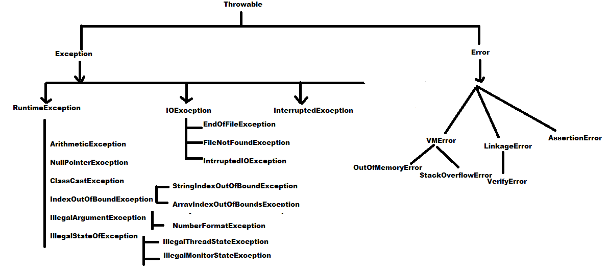

Exception Hierarchy:
- Throwable class acts as a root for Exception hierarchy .
- Throwable class contain 2 child classes .
- Exception: - Most of the cases Exceptions are caused by our program and these are recoverable .
For Example: If our programming requirement is to read data from a remote file . At runtime if remote file is not available then we will get
Runtime Exception: saying "FileNotFoundException" . If "FileNotFoundException" occurs we can provide a local file to
continue rest of the program normally .
- Error: Most of the cases errors are not caused by our program and these are due to lack of system resource .
- Errors are non-recoverable :
For Example : if OutOfMemoryError occurs being a programmer we can not do anything, then the program will be terminated abnormally .
System or Server Admin is responsible to increase Heap memory .
Checked Exception and UnChecked Exception:
Checked Exception
- The Exceptions which are checked by compiler for smooth execution of the program at runtime are called Checked Exceptions
- Compiler will check whether we are handling checked Exception or not .
- If we are not handling then we will get compile time error .

UnChecked Exception:
- The Exception which are not checked by compiler whether the programmer handling or not are called Unchecked Exception
Example: ArithmeticException, NullPointerException
- Note 1: Whether Exception is checked or unchecked compulsory every Exception should occurs at runtime only and there is no chance of occurring any Exception at compile time .
- Note 2: RuntimeException and its child classes and its child classes are unchecked Exception . Except these the remaining are checked Exception .
Fully Checked and Partial Checked Exception:
Fully Checked Exception:
- A checked Exception is said to be fully checked exception if all of its child classes also checked .
- Example :IOException, InterruptedException
Partially Exception:
- A checked Exception is said to be partially fully checked exception if some of its child classes are unchecked .
- Example :Exception, Throwable
- Note: The only available partially checked Exceptions are : Exception and Throwable
Exception Handling by using try-catch:
- It is highly recommended to handle Exception .
- The code which may raise Exception is called Risky code, we have to place risky code inside the try block and the exception handling code inside the catch block .